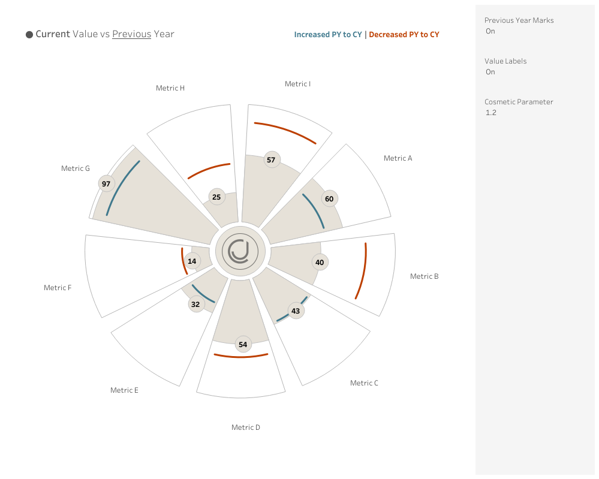
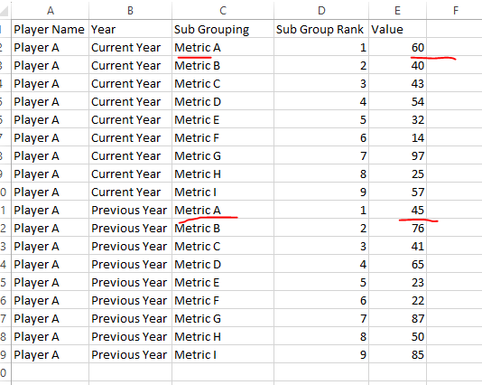
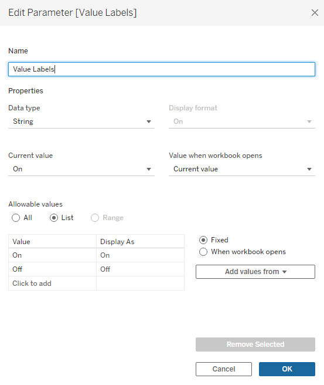
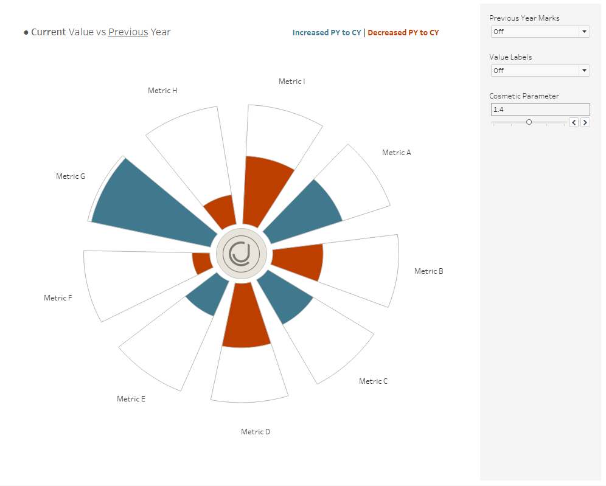
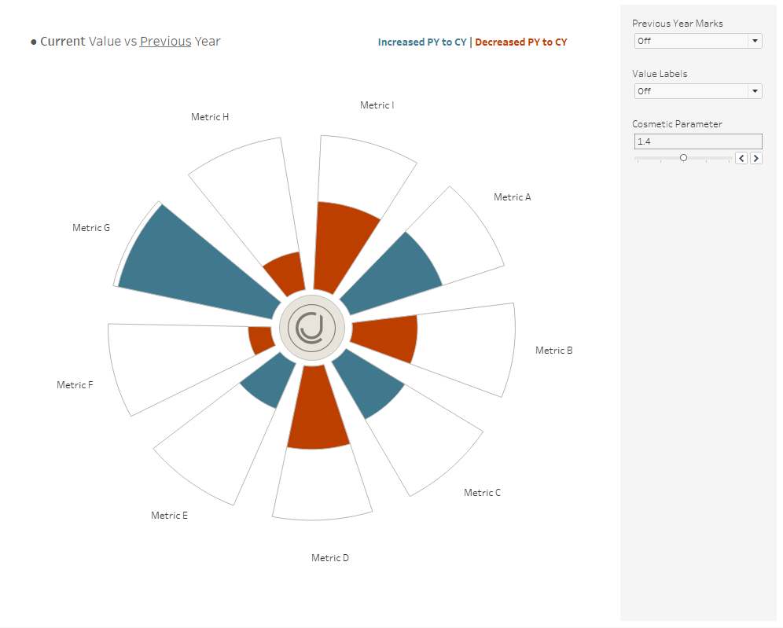
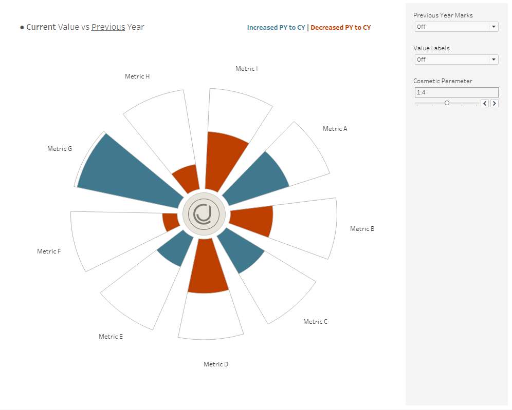

Hi all,
A small bonus blog to the blog last week on radials in Tableau.
https://cj-mayes.com/2024/09/01/radial-charts-in-tableau/
This blog is only intended for those that are wanting to build on that radial chart, I won't be re-explaining any of the calculations as a heads up.
This blog:
Adjusts our visual to be able to plot a "before" and "after" comparison. Instead of one value.
We customise the layering to toggle labels and colours.
We take a look at some cosmetic amendments to change the feel of the radial / wheel.
This is what we will create.

DATA PREP
First we use a slightly amended dataset, that you can find in the git repo.

ADDITIONAL LINE FOR PREVIOUS YEAR
if
[PY - Line] = "On" and
[Year] = "Previous Year"
and [T (T)] > 13 and [T (T)] < 24
then
MAKEPOINT([010. resized x],[011. resized y])
end
A small amendment to our previous chart, we now only look for the T points between 13 and 24. That's because these are the outer edge of our radial.
COLOUR
Secondly we want to amend our colour on our chart to be able to account for both years.
We will want to end up comparing the current and previous year for each metric.
if
{ Fixed [Sub Grouping] : max([Value])} > [Value] then "Smaller"
else "Maximum"
END
With this calculation we will be able to see of the current and previous year which is larger.
That's the colouring sorted on the new chart.
SEGMENT DESIGN
The third main thing I did was add in some flexibility to the wheel design. You can see the segments slightly unwind from one another using the parameter. The calculation that drives this is calculation 4:
[002. Rank] * [003. Angle]
/ ([001. Max Dimensions])/[Sunburst Parameter]
Previously we space our points out perfectly and then divide it by the number of segments, here we just add in a slight increase to what that divisible amount is, making the segments pull away from one another.
PARAMETERS WITH MAKEPOINT
The final aspect I wanted to influence was the idea of being able to toggle on and off different parts of the chart.
Lets take a simple example of turning off the value labels.

I can then write a calculation that says, if the parameter is on, then use the makepoint calc.
if [Value Labels] = "On" and
[T (T)] = 18
and [Year] = "Current Year"
then
MAKEPOINT([010. resized x],[011. resized y])
END
These small amendments take me from
to

in just a few clicks.
Now.... if none of the above made sense, simply replace the data source from the template with your own data or reach out on socials.
LOGGING OFF,
CJ
 to

in just a few clicks.
Now.... if none of the above made sense, simply replace the data source from the template with your own data or reach out on socials.
LOGGING OFF,
CJ
to

in just a few clicks.
Now.... if none of the above made sense, simply replace the data source from the template with your own data or reach out on socials.
LOGGING OFF,
CJ